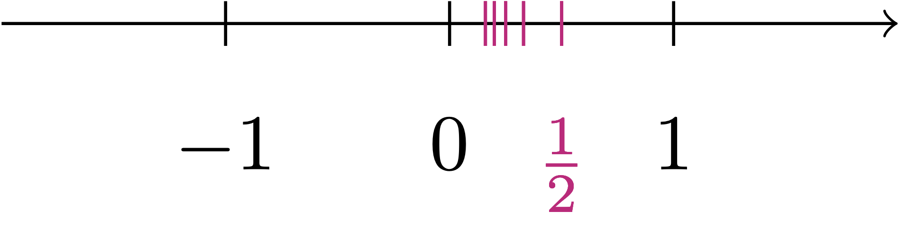
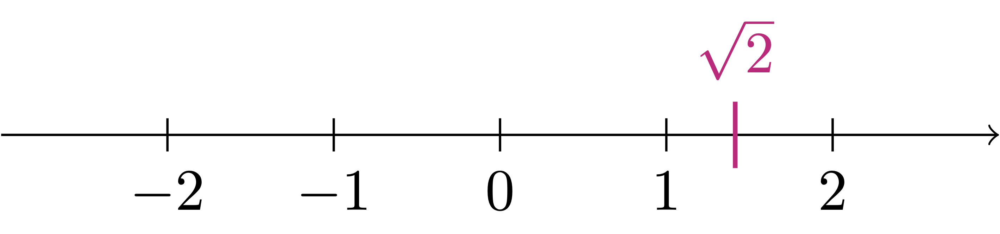

1 Introduction
The first aim of this lecture notes is to rigorously introduce the set of Real Numbers, which is denoted by \(\mathbb{R}\). But what do we mean by real numbers? To start our discussion, introduce the set of natural numbers (or non-negative integers) \[ \mathbb{N}= \{0,1,2,3,4,5,\dots\} \]
On this set we have a notion of sum of two numbers, denoted as usual by \[ n+m \]
for \(n,m \in \mathbb{N}\). Here the symbol \(\in\) denotes that \(m\) and \(n\) belong to \(\mathbb{N}\). For example \(3+7\) results in \(10\).
Question 1
Of course to invert (1.1) we can just perform a subtraction, implying that
\[ x = m - n \,. \]
But there is a catch. In general \(x\) does not need to be in \(\mathbb{N}\). For example, take \(n=10\) and \(m=1\). Then \(x = -9\), which does not belong to \(\mathbb{N}\). Therefore the answer to Question 1 is NO.
To make sure that we can always invert the sum, we need to extend the set \(\mathbb{N}\). This is done simply by introducing the set of integers \[ \mathbb{Z}:= \{ -n,n \, \colon \, n \in \mathbb{N}\} \,, \]
that is, the set
\[ \mathbb{Z}:= \{ \ldots, -3,-2,-1,0,1,2,3,\ldots \} \,. \]
The sum can be extended to \(\mathbb{Z}\), by defining \[ (-n) + (-m) := - (m+n) \tag{1.2}\]
for all \(m,n \in \mathbb{N}\). Now every element of \(\mathbb{Z}\) possesses an inverse, that is, for each \(n \in \mathbb{Z}\), there exists \(m \in \mathbb{Z}\), such that \[ n + m = 0 \,. \]
Can we characterize \(m\) explicitly? Yes; Seeing the definition at (1.2), we simply have \[ m = - n \,. \]
On the set \(\mathbb{Z}\) we can also define the operation of multiplication in the usual way. For \(n,m \in \mathbb{Z}\), we denote the multiplication of \(n\) times \(m\) by \[ nm \quad \text{or} \quad n \cdot m \,. \] For example \(7 \cdot 2 = 14\) and \(1 \cdot (-1) = -1\).
Question 2
To invert (1.3) if \(n \neq 0\), we can just perform a division, to obtain \[ x = \frac{m}{n} \,. \] But again there is a catch. Indeed taking \(n=2\) and \(m=1\) yields \(x = 1/2\), which does not belong to \(\mathbb{Z}\). The answer to Question 2 is therefore NO.
Thus, in order to invert the multiplication, we need to extend the set of integers \(\mathbb{Z}\). This extension is called the set of rational numbers, defined by \[ \mathbb{Q}:= \left\{ \frac{m}{n} \, \colon \, m,n \in \mathbb{Z}, \, n \neq 0 \right\} \,. \] We then extend the operations of sum and multiplication to \(\mathbb{Q}\) by defining \[ \frac{m}{n} + \frac{p}{q} := \frac{mq + np}{nq} \] and \[ \frac{m}{n} \, \cdot \, \frac{p}{q} := \frac{mp}{nq} \] Now the multiplication is invertible in \(\mathbb{Q}\). Specifically, each non-zero element has an inverse: the inverse of \(m/n\) is given by \(n/m\).
To summarize, we have extended \(\mathbb{N}\) to \(\mathbb{Z}\), and \(\mathbb{Z}\) to \(\mathbb{Q}\). By construction we have \[ \mathbb{N}\subset \mathbb{Z}\subset \mathbb{Q}\,. \] Moreover sum and product are invertible in \(\mathbb{Q}\). Now we are happy right? So and so.
Question 3
It is clear how to draw \(\mathbb{Z}\), as seen below.

However \(\mathbb{Q}\) is much larger than the set \(\mathbb{Z}\) represented by the ticks in Figure 1.1. What do we mean by larger? For example, consider \(0 \in \mathbb{Q}\).
Question 4
There is no right answer to the above question, since whichever rational number \(m/n\) you consider, you can always squeeze the rational number \(m / (2n)\) in between: \[ 0 < \frac{m}{2n} < \frac{m}{n} \,. \] For example think about the case of the numbers \[ \frac1n \, \text{ for } \, n \in \mathbb{N}, \, n \neq 0 \,. \] Such numbers get arbitrarily close to \(0\), as depicted below.

Maybe if we do the same reasoning with other progressively smaller rational numbers, we manage to fill up the interval \([0,1]\). In other words, we might conjecture the following.
Conjecture 5
Do you think the above conjecture is true? Conjecture 5 is false, as shown by the Theorem below.
Theorem 6
Theorem 6 is the reason why \(\sqrt{2}\) is called an irrational number. For reference, a few digits of \(\sqrt{2}\) are given by \[ \sqrt{2} = 1.414213562373095048\ldots \] and the situation is as in the picture below.

We can therefore see that Conjecture 5 is false, and \(\mathbb{Q}\) is not a line: indeed \(\mathbb{Q}\) has a gap at \(\sqrt{2}\). Let us see why Theorem 6 is true.
Proof: Proof of Theorem 6
We prove that \[ \sqrt{2} \notin \mathbb{Q} \] by contradiction.
Wait, what does this mean? Proving the claim by contradiction means assuming that the claim is false. This means we assume that \[
\sqrt{2} \in \mathbb{Q}\,.
\tag{1.4}\] From this assumption we then start deducing other statements, hoping to encounter a statement which is FALSE. But if (1.4) leads to a false statement, then it must be that (1.4) was FALSE to begin with. Thus the contrary of (1.4) must hold, meaning that \[
\sqrt{2} \notin \mathbb{Q}
\] as we wanted to show. This would conclude the proof.
Now we need to actually show that assuming (1.4) will lead to a contradiction. Since this is our first proof, let us take it slowly, step-by-step.
Assuming (1.4) just means that there exists \(q \in \mathbb{Q}\) such that \[ q = \sqrt{2} \, . \tag{1.5}\]
Since \(q \in \mathbb{Q}\), by definition we have \[ q = \frac{m}{n} \] for some \(m,n \in \mathbb{N}\) with \(n \neq 0\).
Recalling (1.5), we then have \[ \frac{m}{n} = \sqrt{2} \,. \]
We can square the above equation to get \[ \frac{m^2}{n^2} = 2 \,. \tag{1.6}\]
Withouth loss of generality, we can assume that \(m\) and \(n\) have no common factors.
Wait. What does Step 5 mean? You will encounter the sentence withouth loss of generality many times in mathematics. It is often abbreviated in
WLOG. WLOG means that we can make some extra assumption which does not affect the validity of the proof in general.
For example in our case we can assume that \(m\) and \(n\) have no common factor. This is because if \(m\) and \(n\) had common factors, then it would mean \[ m = a \tilde{m} \,, \quad n = a \tilde{n} \] for some factor \(a \in \mathbb{N}\) with \(a \neq 0\). Then \[ \frac{m}{n} = \frac{ a \tilde{m} }{ a \tilde{n} } = \frac{ \tilde{m} }{ \tilde{n} } \,. \] Therefore by (1.6) \[ \frac{ \tilde{m}^2 }{ \tilde{n}^2 } = 2 \,. \] and this time \(\tilde{m}\) and \(\tilde{n}\) have no common factors by construction. The proof can now proceed in the same way it would have proceeded from Step 4, but in addition we have the hypothesis that \(\tilde{m}\) and \(\tilde{n}\) have no common factors.Equation (1.6) implies \[ m^2 = 2 n^2 \,. \tag{1.7}\] Therefore the integer \(m^2\) is an even number.
Why is \(m^2\) even? As you already know, even numbers are \[ 0, 2, 4, 6, 8, 10, 12, \ldots \] All these numbers have in common that they can be divided by \(2\), and so they can be written as \[ 2 p \] for some \(p \in \mathbb{N}\). For example \(52\) is even, because \[ 52 = 2 \cdot 26 \,. \] Instead, odd numbers are \[ 1, 3, 5, 7, 8, 9, 11, \ldots \] These can be all written as \[ 2p + 1 \] for some \(p \in \mathbb{N}\). For example \(53\) is odd, because \[ 52 = 2 \cdot 26 + 1 \,. \]
Since \(m^2\) is an even number, it follows that also \(m\) is an even number. Then there exists \(p \in \mathbb{N}\) such that \[ m = 2p \,. \tag{1.8}\]
Why is \(m\) even if \(m^2\) is even? Let us see what happens if we take the square of an even number \(m = 2p\) \[ m^2 = (2p)^2 = 4p^2 = 2 (2p^2) = 2 q \,. \] Thus \(m^2 = 2 q\) for some \(q\in \mathbb{N}\), and so \(m^2\) is an even number. If instead \(m\) is odd, then \(m = 2p + 1\) and \[ m^2 = (2p + 1 )^2 = 4p^2 + 4p + 1 = 2(2 p^2 + 2p) + 1 \] showing that also \(m^2\) is odd.
This proves Step 7: Indeed we know that \(m^2\) is an even number from Step 6. If \(m\) was odd, then \(m^2\) would be odd. Hence \(m\) must be even as well.If we substitute (1.8) in (1.7) we get \[ m^2 = 2n^2 \, \implies \, (2p)^2 = 2n^2 \, \implies \, 4 p^2 = 2 n^2 \] Dividing both terms by \(2\), we obtain \[ n^2 = 2p^2\,. \tag{1.9}\]
We now make a series of observations:
- Equation (1.9) says that \(n^2\) is even.
- The same argument in Step 7 guarantees that also \(n\) is even.
- We have already seen that \(m\) is even.
- Therefore \(n\) and \(m\) are both even.
- Hence \(n\) and \(m\) have \(2\) as common factor.
- But Step 5 says that \(n\) and \(m\) have no common factors.
CONTRADICTION
Our reasoning has run into a contradiction, stemming from assumption (1.4). Therefore (1.4) is FALSE, and so \[ \sqrt{2} \notin \mathbb{Q}\, \] ending the proof.
Seeing that \(\sqrt{2} \notin \mathbb{Q}\), we might be tempted to just fill in the gap by adding \(\sqrt{2}\) to \(\mathbb{Q}\). However, with analogous proof to Theorem 6, we can prove that \[ \sqrt{p} \notin \mathbb{Q} \] for each prime number \(p\). As there are infinite prime numbers, this means that \(\mathbb{Q}\) has infinite gaps. Then we might attempt to fill in these gaps via the extension \[ \tilde{\mathbb{Q}} := \mathbb{Q}\cup \{ \sqrt{p} \, \colon \, p \, \text{ prime} \} \,. \] However even this is not enough, as we would still have numbers which are not contained in \(\tilde{Q}\), for example \[ \sqrt{2} + \sqrt{3} , \, \pi , \, \pi + \sqrt{2} \notin \tilde{\mathbb{Q}} \,. \]
Conclusion: It is now intuitive to think that there is no straightforward way to fill the gaps of \(\mathbb{Q}\) by adding numbers by hand.
Remark 7
The reality of things is that to complete \(\mathbb{Q}\) and make it into a continuous line we have to add a lot of points. Indeed, we need to add way more points than the ones already contained in \(\mathbb{Q}\).
Definition 8
The inclusions will therefore be \[ \mathbb{N}\subset \mathbb{Z}\subset \mathbb{Q}\subset \mathbb{R}\,. \] The set \(\mathbb{R}\) is not at all trivial to construct. In fact, explicit constructions are so involved and technical, that they are best left for future reading. It is customary instead to proceed as follows:
- We will
assumethat \(\mathbb{R}\)existsand satisfies a set ofaxioms. - One of the axioms states that \(\mathbb{R}\) fills all the gaps that \(\mathbb{Q}\) has. Therefore \(\mathbb{R}\) can be thought as a continuous line.
- We will study the properties of \(\mathbb{R}\) which descend from such axioms.
For example one of the properties of \(\mathbb{R}\) will be the following:
Theorem 9: We will prove this in the future
A concrete model for the real numbers \(\mathbb{R}\) can be constructed using Dedekind cuts. The interested reader can refer to the Appendix in Chapter 1 of (Rudin 1976), or to the beautifully written Chapter 8.6 in (Abbott 2015). Such model of \(\mathbb{R}\) can be used to prove the following Theorem:
Theorem 10: Existence of the Real Numbers
There exists a set \(\mathbb{R}\), called the set of Real Numbers, which has the following properties:
- \(\mathbb{R}\) extends \(\mathbb{Q}\), that is, \[ \mathbb{Q}\subset \mathbb{R}\,. \]
- \(\mathbb{R}\) satisfies a certain set of axioms.
- \(\mathbb{R}\) fills all the gaps that \(\mathbb{Q}\) has. In particular \(\mathbb{R}\) can be represented by a continuous line.